Authors: Ruoming Gong, Theodore Broeren, Eryn M. Cangi, Daniel M. Abrams
Type: theory · Category: statistical mechanics · PDF: https://arxiv.org/pdf/2606.13920v1
Analysis basis: full PDF text, analyzed in chunks
Topic relevance: driven-dissipative phase transition 3/5 · methods for driven-dissipative 3/5 · non-equilibrium dynamics 2/5 · non-equilibrium universality 2/5 · Frenkel-Kontorova 1/5 · Keldysh / 2PI / non-Gaussian methods 1/5 · analog quantum simulation 1/5 · correlated / nonlocal dissipation 1/5 · entanglement & information structure 1/5
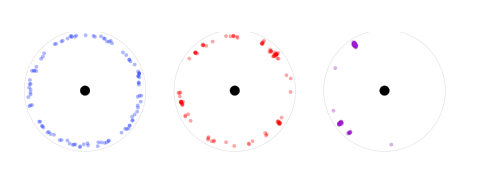
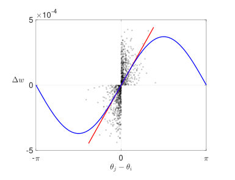
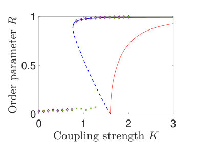
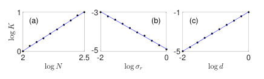
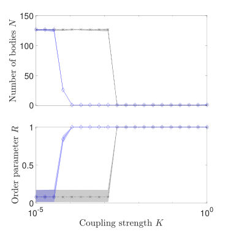
Summary. This paper models planetary ring formation by treating particle interactions as discrete collisions within a coupled oscillator system. It demonstrates that the resulting collective behavior maps onto the Kuramoto model, predicting a phase transition that dictates whether the material aggregates into moons or forms stable rings. The work provides scaling laws connecting orbital mechanics parameters to the effective coupling strength.
Why it may be interesting. While applied to astrophysics, the core mathematical framework—modeling collective behavior via a phase transition analogous to the Kuramoto model using collision dynamics—is highly relevant to non-equilibrium statistical mechanics and many-body synchronization problems in AMO physics.
Main problem. The study aims to explain the physical dichotomy between the formation of compact satellite bodies versus extended planetary ring systems in protoplanetary disks.
Main result. The system dynamics are shown to be mathematically equivalent to a variant of the Kuramoto model, exhibiting a phase transition that governs whether the final state is aggregated (moon-like) or dispersed (ring-like).
Method. The authors develop a collision-based framework where particle interactions and energy dissipation drive the evolution, comparing this discrete process to continuous mean-field models.
Model / system. The model consists of N identical particles on coplanar circular orbits around a central mass M. Interactions are modeled as pairwise collisions that conserve angular momentum while allowing for energy dissipation ($E_0\Delta t$).
Key observables. Order Parameter (R), final orbital radii, and the phase transition point between synchronous/incoherent states.
Important parameters / regimes. Particle number (N), interaction range (d), standard deviation of radii ($\sigma_r$), and dissipation rate ($E_0$).
Assumptions / limitations. Particles are restricted to perfect coplanar circular orbits, and the energy loss mechanism is assumed constant per collision event.
Figures summary. Figures illustrate simulation snapshots showing ordered states (order parameter $\approx 0.75$), phase transition curves ($N$ vs $R$), and scaling laws for the effective coupling strength ($K_{pw}$) in weak versus strong interaction regimes.
Paper structure. The paper progresses from defining the physical problem to deriving collision mechanics, establishing the analogy with the Kuramoto model, determining scaling laws for the coupling constant based on interaction regimes (weak/strong), and finally simulating the resulting structure formation.
We study the dichotomy between compact satellite and ring formation in proto-planetary disks. Specifically, we examine the behavior of a model system of $N$ identical particles locked into circular, gravitationally-bound orbits around a central body. We treat interactions as dominated by inter-particle collisions, and extract an effective two-particle interaction function based on both theory and simulations. We then demonstrate that the expected dynamics are equivalent to a variant of the Kuramoto model, which undergoes a phase transition as parameters vary. This offers a novel potential explanation for the transition between formation of rings versus moons.
Authors: A. A. Pérez Martínez, D. Velázquez Rodríguez, D. Goijman, T. Torres, M. H. Aguirre, J. Gómez, A. Butera, E. De Biasi, J. Milano
Type: both · Category: other · PDF: https://arxiv.org/pdf/2606.13805v1
Analysis basis: full PDF text, analyzed in chunks
Topic relevance: spintronics-quantum-optics interface 3/5 · non-equilibrium dynamics 2/5 · Keldysh / 2PI / non-Gaussian methods 1/5 · analog quantum simulation 1/5 · correlated / nonlocal dissipation 1/5 · driven-dissipative phase transition 1/5 · exotic spin models in light-matter 1/5 · methods for driven-dissipative 1/5 · non-equilibrium universality 1/5
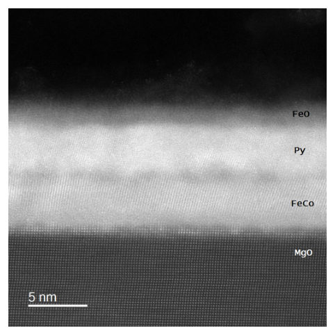
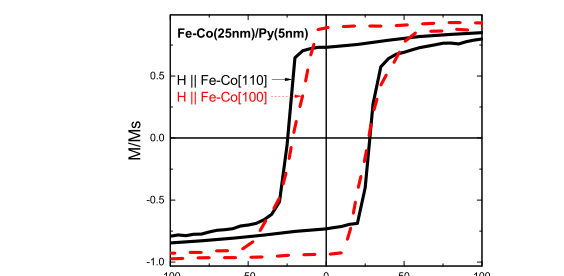
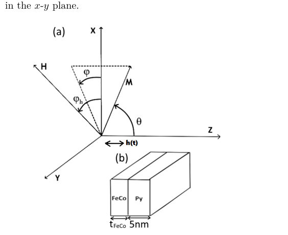
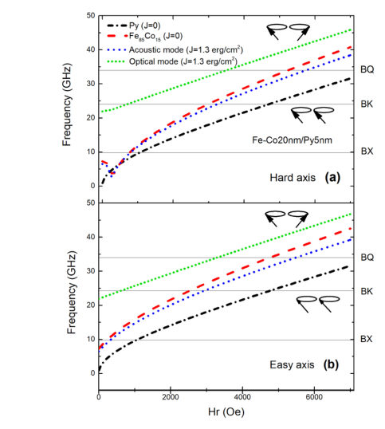
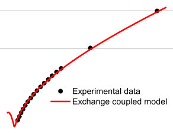
Summary. This work systematically studies spin current enhancement in ferromagnetic bilayers by modeling the influence of interlayer exchange coupling ($J_{ex}$). Using a combination of VSM, MOKE, and broadband FMR measurements alongside theoretical LLG simulations, the authors demonstrate that maximizing spin current requires tuning $J_{ex}$ to an intermediate value. This provides a pathway for designing spintronic devices with optimized spin injection efficiency.
Why it may be interesting. While focused on spintronics, the detailed analysis of coupled magnetic excitations (acoustic/optical modes) and the use of nonlinear dynamic equations ($ ext{LLG}$) provide rich mathematical structures relevant to open quantum systems dynamics and energy dissipation in nanoscale magnetic circuits.
Main problem. The study investigates how tuning the strength of interlayer magnetic coupling influences spin wave behavior and maximizes injected spin currents in $ ext{Fe}{85} ext{Co}}/ ext{Ni{80} ext{Fe}$ ferromagnetic bilayers.
Main result. A maximum in the magnetization precession area, indicative of enhanced spin current injection, is observed when the interlayer exchange coupling constant ($J_{ex}$) is tuned to an intermediate value. This effect can be optimized by controlling $J_{ex}$, material saturation magnetizations ($ ext{M}_s$), or excitation frequency.
Method. The research combines experimental characterization (VSM, MOKE, FMR using VNA) with theoretical modeling based on the Landau-Lifshitz-Gilbert equation of motion and a derived free energy functional.
Model / system. The system is an epitaxial $ ext{Fe}{85} ext{Co}}/ ext{Ni{80} ext{Fe}$ bilayer grown on MgO[100] substrates. The dynamics are modeled using a bilayer Hamiltonian incorporating Zeeman, shape, cubic/uniaxial anisotropy, and the interlayer exchange coupling term ($J_{ex}$).
Key observables. Magnetization precession area (diagnostic for spin current), resonance field ($ ext{H}r$), saturation magnetization ($ ext{M}_s$), and the interlayer exchange constant ($J$).
Important parameters / regimes. Interlayer coupling strength ($J_{ex}$), material thicknesses, excitation frequency ($ u \sim 9.7-35 ext{ GHz}$), and $ ext{M}_s$ of constituent layers.
Assumptions / limitations. The analysis relies on a bilayer model within the LLG equation framework, linearizing dynamics for small oscillations to analyze coupled acoustic and optical modes.
Figures summary. Figures illustrate magnetization hysteresis loops showing anisotropy axes; FMR spectra show mode splitting related to $J_{ex}$; and key figures plot the precession area versus $J_{ex}$ or $ ext{M}_s$, demonstrating the maximum enhancement point.
Paper structure. The paper proceeds by characterizing the magnetic properties (anisotropy, $ ext{M}_s$) of the bilayers experimentally. It then develops a theoretical model using the free energy and LLG equation to predict coupled spin dynamics. Finally, it analyzes how tuning $J_{ex}$ leads to an optimal condition for maximizing the precession area, which correlates with maximum spin current.
We present a detailed study on how the strength of the interlayer magnetic coupling on Fe$_{85}$Co$_{15}$/Ni$_{80}$Fe$_{20}$ bilayers modifies the spin wave behavior of this system. A series of Fe$_{85}$Co$_{15}$/Ni$_{80}$Fe$_{20}$ bilayers deposited on MgO[100] substrates were grown by magnetron sputtering. Magnetic characterization of the samples was performed using a vibrating sample magnetometer and magneto-optical Kerr effect. The in-plane hysteresis loops reveal a cubic magnetic anisotropy of magnetocrystalline origin, with easy and hard axis along the [100] and [110] Fe-Co crystallographic directions, respectively. Ferromagnetic resonance measurements were performed to analyze the in-plane angular dependence of the resonance field, and also the resonance field at several frequencies was determined along the hard axis. By using a bilayer model in the frame of the Landau-Lifshitz-Gilbert magnetization equation of motion, the magnetization precession components were calculated, as well as the dependence of precession area on the Fe-Co layer thickness and the ferromagnetic interlayer coupling. We observe a maximum in the area of the ellipsoid generated by the magnetization precession of the permalloy layer at a certain exchange constant, showing that this effect could be used to maximize the injected spin currents, which could be tuned by changing the interlayer exchange constant in bilayer systems, the saturation magnetization of the materials, or the excitation frequency.
Authors: Sudip Dutta, Pushpita Ghosh
Type: theory · Category: statistical mechanics · PDF: https://arxiv.org/pdf/2606.14330v1
Analysis basis: full PDF text, analyzed in chunks
Topic relevance: driven-dissipative phase transition 2/5 · non-equilibrium dynamics 2/5 · non-equilibrium universality 2/5 · Frenkel-Kontorova 1/5 · Keldysh / 2PI / non-Gaussian methods 1/5 · analog quantum simulation 1/5 · correlated / nonlocal dissipation 1/5 · methods for driven-dissipative 1/5 · quantum measurements 1/5
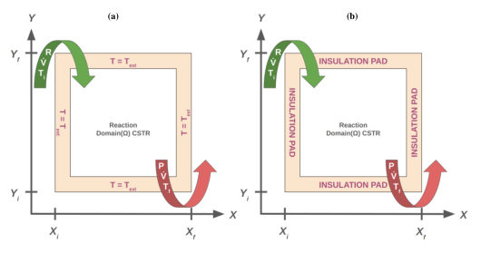
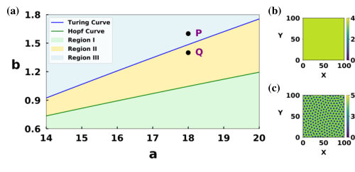
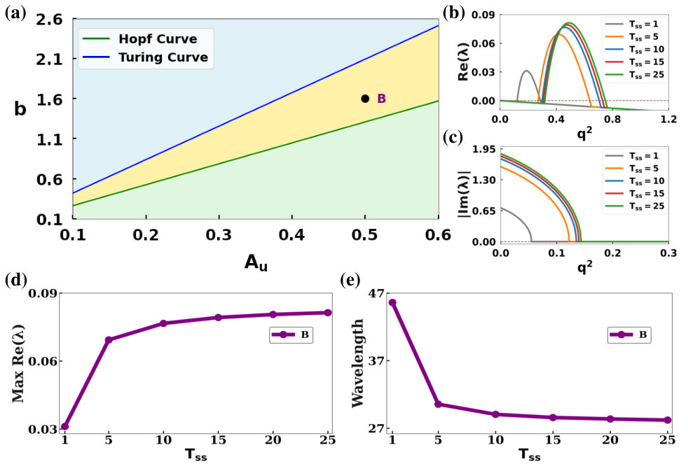
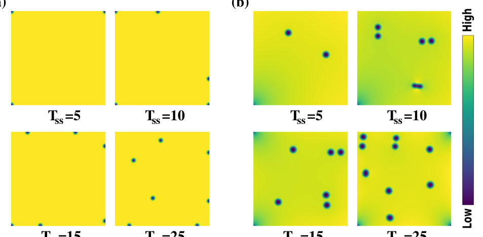
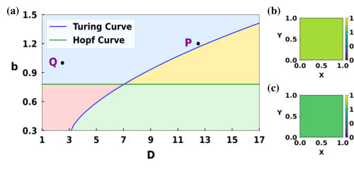
Summary. This work analyzes how thermal feedback controls pattern formation in chemical reaction-diffusion systems by dynamically coupling temperature evolution to reaction rates. It demonstrates that while temperature universally enhances instability and tunes spatial scales, the resulting global behavior—especially near boundaries—is critically dependent on whether the system is modeled as isothermal or thermally coupled.
Why it may be interesting. While focused on classical pattern formation, the methodology of coupling a non-equilibrium thermodynamic variable (T) into reaction kinetics via exponential dependencies is highly relevant to open quantum systems where environmental coupling dictates system dynamics or energy dissipation pathways.
Main problem. The study investigates how coupling temperature dynamics into reaction-diffusion systems modifies pattern formation, moving beyond traditional isothermal assumptions.
Main result. Thermal feedback acts as a general control mechanism, enhancing instability growth rates and shifting pattern selection toward shorter wavelengths. The global dynamic response (stationary vs. nonstationary) is highly dependent on the specific model kinetics and boundary conditions.
Method. The analysis employs linear stability analysis (LSA) around steady states for coupled reaction-diffusion equations, supplemented by numerical simulations to examine nonlinear boundary effects.
Model / system. The system involves activator-inhibitor kinetics ($u, v$) coupled to a dynamically evolving temperature field ($T$). The coupling is modeled using Arrhenius-type dependencies for reaction rates and heat exchange governed by Newton's law of cooling at the boundaries.
Key observables. Instability growth rates ($ ext{Re}(\lambda)$), pattern selection wavelengths, and global dynamic behavior (stationary vs. nonstationary).
Important parameters / regimes. Boundary conditions (Neumann vs. Dirichlet for T), temperature ($T_{ss}$), and kinetic parameters defining the Arrhenius factors.
Assumptions / limitations. The analysis assumes that temperature evolves dynamically and is coupled to reactions, contrasting with previous isothermal assumptions; linear stability analysis is performed around a steady state.
Figures summary. Figures illustrate bifurcation diagrams showing instability regions in parameter space, dispersion relations demonstrating wavelength shifts with temperature, and simulated spatial patterns comparing zero-flux (Neumann) versus fixed-temperature (Dirichlet) boundary conditions for both CDIMA and Schnakenberg models.
Paper structure. The paper progresses by first establishing the general coupled equations, performing linear stability analysis to show kinetic renormalization effects, and then contrasting the nonlinear outcomes using two canonical models (CDIMA and Schnakenberg) under different thermal boundary constraints.
Pattern formation in reaction-diffusion systems is traditionally analyzed under isothermal assumptions, overlooking the dynamical role of temperature in systems where reactions generate and dissipate heat. Here, we investigate non-isothermal reaction-diffusion dynamics by coupling activator-inhibitor kinetics to a dynamically evolving temperature field that modulates reaction rates through Arrhenius-type dependencies. This coupling introduces an additional feedback mechanism that influences stability and pattern selection. Through analytical and numerical analysis of the Cholrine dioxide-Iodine-Malonic acid (CDIMA) and Schnakenberg models, we demonstrate that thermal feedback modifies dispersion relations by enhancing instability growth rates and shifting pattern selection toward shorter wavelengths. Beyond these intrinsic effects, we identify a boundary-mediated mechanism in which thermal constraints qualitatively alter global dynamics. In particular, fixed-temperature boundaries induce nonstationary behavior in the CDIMA system, whereas the Schnakenberg model exhibits robust stationary patterns. These results establish thermal-kinetic coupling as a general mechanism for controlling pattern formation and highlight the role of boundary-mediated heat exchange as a tunable parameter for spatiotemporal organization.
Authors: Bernd Aichner, Simon Koch, Philipp A. Korner, Max Karrer, Katja Wurster, Christoph Schmid, Ulrich Kentsch, Reinhold Kleiner, Edward Goldobin, Dieter Koelle, Wolfgang Lang
Type: experiment · Category: strongly correlated electrons · PDF: https://arxiv.org/pdf/2606.14588v1
Analysis basis: full PDF text, analyzed in chunks
Topic relevance: driven-dissipative phase transition 2/5 · Frenkel-Kontorova 1/5 · correlated / nonlocal dissipation 1/5 · methods for driven-dissipative 1/5 · non-equilibrium dynamics 1/5 · non-equilibrium universality 1/5
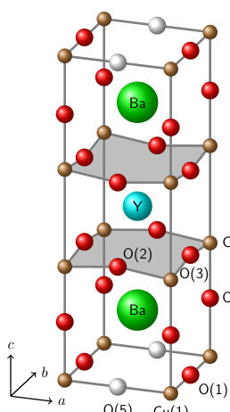
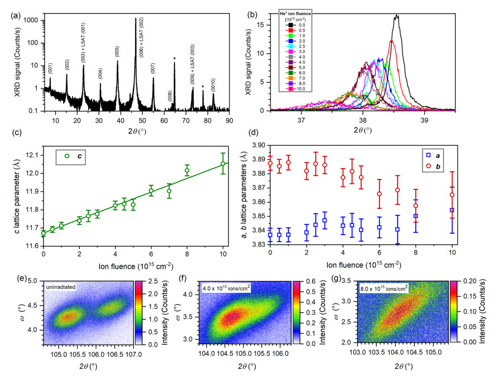
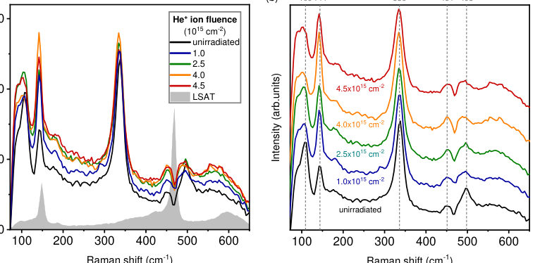
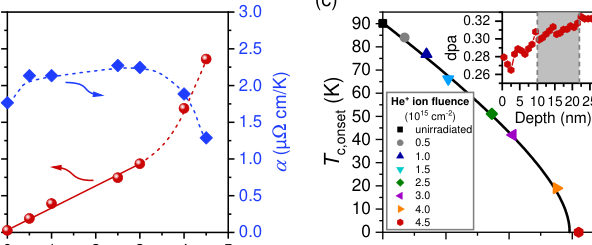
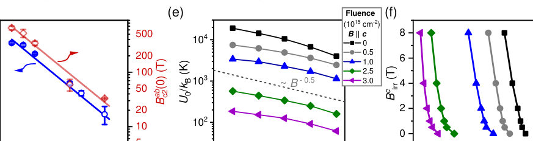
Summary. This paper details the use of focused helium ion beam irradiation to precisely tune the superconducting properties of YBCO thin films. By correlating structural changes observed via XRD and Raman spectroscopy with electrical transport measurements, the authors establish quantitative fluence thresholds for patterning devices. The findings confirm that defect creation governs superconductivity suppression, offering a powerful tool for engineering quantum circuits.
Why it may be interesting. This work provides an experimental blueprint for controlling fundamental superconducting parameters ($T_c$, anisotropy) in cuprates using controlled damage, which is highly relevant to understanding disorder effects on strongly correlated quantum materials.
Main problem. The study investigates how controlled damage, specifically using focused helium ion beam irradiation, alters the superconducting and electronic properties of YBa2Cu3O7 (YBCO) thin films for use in nanoscale device patterning.
Main result. Irradiation primarily introduces oxygen-related Frenkel defects, leading to a suppression of the critical temperature ($T_c$) via Abrikosov–Gor’kov pair breaking theory and causing a crossover from clean to dirty electronic transport limit.
Method. The research combines structural characterization (XRD, Raman spectroscopy) with comprehensive magnetotransport measurements (resistivity, Hall effect) across varying ion fluences.
Model / system. The physical system is epitaxial YBCO thin films. The study models the superconducting degradation using Abrikosov–Gor’kov pair-breaking theory and analyzes transport changes by tracking scattering rates and mean-free paths relative to coherence lengths.
Key observables. Critical temperature ($T_c$), upper critical fields ($B_{c2}$), normal-state resistivity ($ ho_N(T)$), Hall angle ($\cot heta_H$), and anisotropy ratio ($\gamma$).
Important parameters / regimes. Ion fluence ($\Phi$) ranging up to $1 imes 10^{16} ext{ cm}^{-2}$; the crossover fluence marking the transition to the dirty limit.
Assumptions / limitations. The observed changes in superconducting properties are attributed to point defects generated by irradiation, rather than significant changes in oxygen stoichiometry or carrier concentration.
Figures summary. Figures illustrate the exponential decay of $B_{c2}(0)$ with fluence, the linear decrease of $T_{c, ext{onset}}$ vs. fluence, and the crossover from clean to dirty limit behavior observed via transport measurements.
Paper structure. The paper systematically presents structural evidence (XRD/Raman) showing disorder accumulation, followed by electrical characterization demonstrating $T_c$ suppression and changes in scattering mechanisms, culminating in defining a practical operational window for device fabrication.
Focused helium ion beam (He-FIB) irradiation with 30 keV ions is a key tool for nanoscale patterning and defect engineering in high transition temperature (Tc) cuprate superconducting devices, yet its usable fluence window is constrained by the competing requirements of reliable superconductivity suppression and minimal structural degradation. In this work, we provide a comprehensive dataset on the effects of large-area 30 keV He+ ion exposure on the electric transport and superconducting properties of epitaxial YBa2Cu3O7 (YBCO) thin films. X-ray diffraction shows a fluence-driven loss of crystalline order accompanied by an out-of-plane lattice expansion and an orthorhombic-to-tetragonal transition, culminating at predominant amorphization at the highest fluence of 1 x 10^16 cm^-2. Raman spectra exhibit increasing disorder while lacking signatures of oxygen depletion, indicating that irradiation mainly generates oxygen-related Frenkel defects rather than changing the carrier concentration. Consistently, with increasing fluence, the normal-state resistivity ρ_N(T) at temperature T above Tc increases strongly, while d ρ_N/d T remains nearly unchanged at moderate fluence. The suppression of Tc is accurately described by Abrikosov-Gor'kov pair breaking and reaches complete quenching of superconductivity at 4.5 x 10^15 cm^-2. The anisotropic upper critical fields decrease approximately exponentially with increasing fluence, the vortex activation energy is reduced, and the anisotropy drops, in contrast to oxygen-depleted YBCO. Hall-angle analysis confirms a nearly constant carrier density but a systematic increase in defect scattering and reduced mobility, consistent with a crossover toward the dirty limit at high fluence. These results establish quantitative fluence thresholds and a practical operational window for He-FIB nanopatterning of YBCO quantum circuits.
Authors: Ziqi Zhao, Cliff Sun, Ci-You Huang, Jiankun Zhang, Xiangyu Song, Alexey Bezryadin
Type: both · Category: other · PDF: https://arxiv.org/pdf/2606.14051v1
Analysis basis: full PDF text, analyzed in chunks
Topic relevance: non-equilibrium dynamics 2/5 · Keldysh / 2PI / non-Gaussian methods 1/5 · driven-dissipative phase transition 1/5 · methods for driven-dissipative 1/5 · non-equilibrium universality 1/5
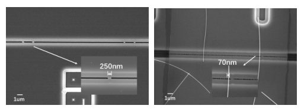
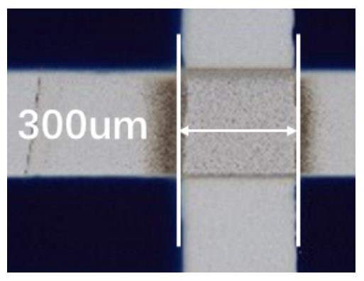
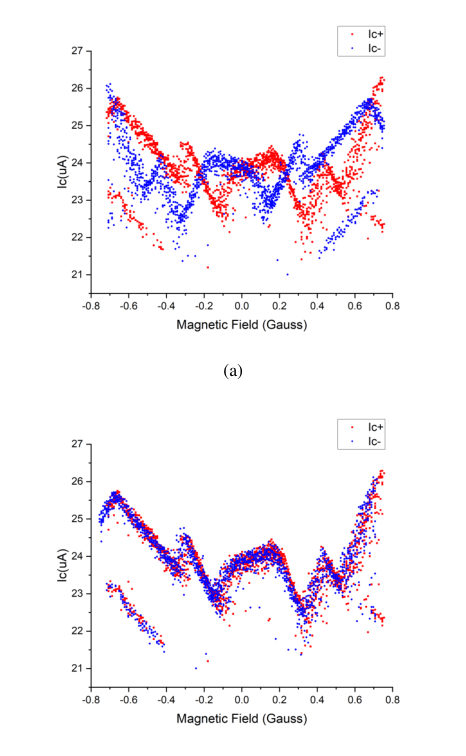
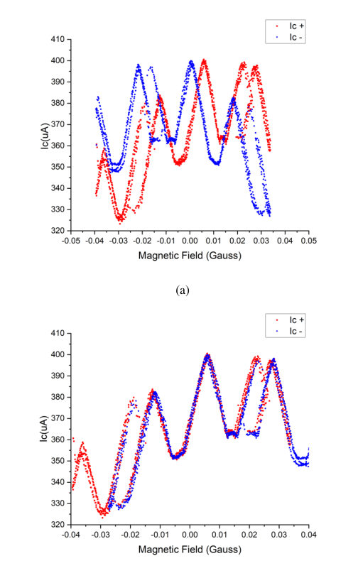
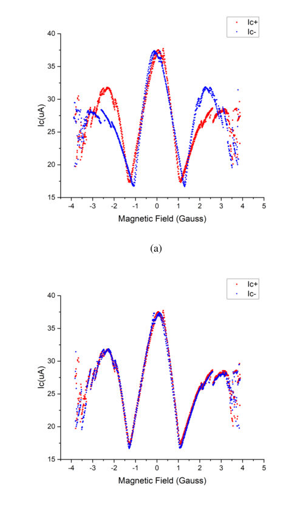
Summary. This work investigates the symmetry of critical current in nanoscale superconductors using both experiments and advanced theoretical modeling. It establishes that while many multi-link systems obey $I$-$B$ symmetry, hybrid junctions can exhibit clear violations due to polarity-dependent selection among competing vortex states. This has implications for designing reliable superconducting electronic components.
Why it may be interesting. The study bridges fundamental superconducting symmetries with device physics, offering insights into how microscopic details (like junction type or polarity) can break macroscopic symmetries in quantum transport phenomena. This relates to understanding non-equilibrium dynamics in mesoscopic circuits.
Main problem. The study investigates the symmetry properties of the critical current function ($I_c$) in superconducting nanodevices, specifically focusing on the $I$-$B$ inversion symmetry: $I_{c,+}(B) = -I_{c,-}(-B)$. The goal is to understand when this fundamental symmetry is preserved or broken.
Main result. The $I$-$B$ symmetry is generally obeyed in multi-nanowire SQUID models, but clear violations are observed in hybrid junctions (SIS–ML), suggesting that polarity-dependent selection of metastable vorticity states causes the asymmetry.
Method. The research combines low-temperature transport measurements on various nanodevices with theoretical modeling using effective potential energy landscapes derived from Meissner phase equations and Josephson junction physics.
Model / system. The systems include superconducting weak-link devices (nanowires, SQUIDs) modeled by combining different Current-Phase Relations (CPR), such as sinusoidal (SIS junctions) and linear (metallic links). The analysis focuses on the energy landscape governing vortex configurations.
Key observables. Critical current $I_c(B)$ vs. Magnetic Field $B$, positive ($ ext{Ic}+$) and negative ($ ext{Ic}-$) switching currents, and the degree of symmetry matching between $ ext{Ic}_+(B)$ and $- ext{Ic}_-(- ext{B})$.
Important parameters / regimes. Base temperature ($T_{base} \sim 350$ mK), magnetic field $B$, and junction parameters (e.g., stiffness constants $K_k$).
Assumptions / limitations. For theoretical modeling, approximations include neglecting vector potential contributions along the length of each nanowire (short wire approximation) and assuming specific CPR forms.
Figures summary. Figures illustrate SEM images of tested devices; key figures compare measured $ ext{Ic}_+(B)$ vs. $- ext{Ic}_-(- ext{B})$ to demonstrate symmetry preservation or type 1/type 2 breaking in hybrid junctions, alongside simulated energy landscapes showing state transitions.
Paper structure. The paper progresses from experimental observation of $I$-$B$ symmetry in simple devices (A-C) to identifying clear violations in complex hybrids (D). It then develops theoretical models using multi-nanowire SQUID frameworks and hybrid junction arrays to explain the underlying physics governing state selection and symmetry breaking.
We study a variety of nano-scale superconducting devices containing more than one weak link. Even in devices with multiple weak links the IB symmetry is usually obeyed, which means that if we reverse both the bias current direction and the magnetic field direction at the same time, the superconducting response, namely the critical current, remains unchanged. We also provide a detailed analysis of the situations in which such symmetry is violated.
Authors: Harsh Mishra, Ullas Pandey, Sathish Bonam, Adirae Dinesh, Sai Rama Krishna Malladi, Shiv Govind Singh
Type: experiment · Category: other · PDF: https://arxiv.org/pdf/2606.14103v1
Analysis basis: full PDF text, analyzed in chunks
Topic relevance: QC/QI experiment 2/5
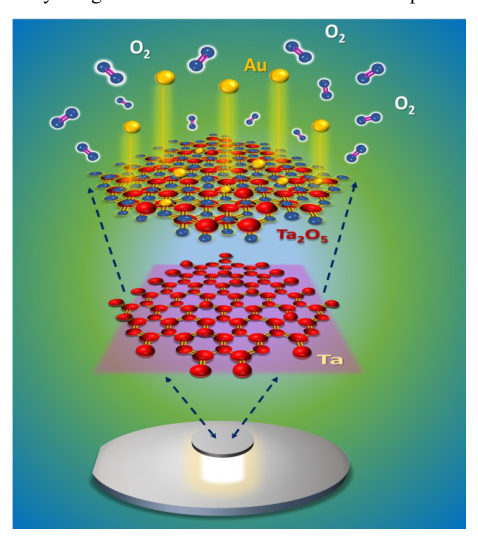
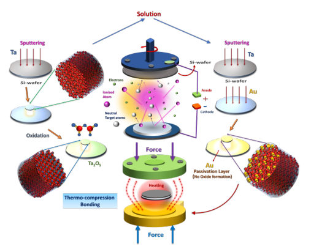
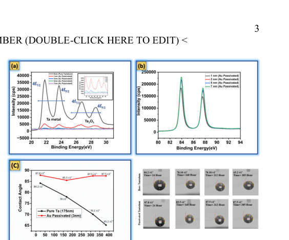
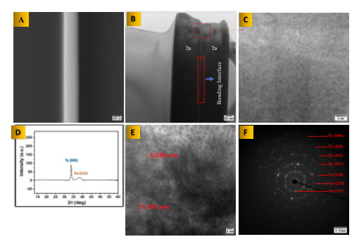
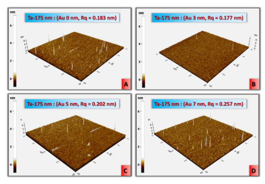
Summary. This research addresses the challenge of bonding Tantalum superconducting interconnects for 3D integration by using an ultrathin Gold passivation layer. This technique suppresses detrimental oxide formation, allowing a strong, reliable bond to be formed at a significantly lower temperature ($300^\circ ext{C}$). The results demonstrate a robust method enabling scalable fabrication for advanced electronic and quantum devices.
Why it may be interesting. While not directly related to quantum information theory itself, this work is highly relevant to superconducting circuit fabrication, which forms the physical backbone of many quantum computing architectures (e.g., Josephson junctions). The focus on low-loss, high-reliability interconnects is critical for scaling up any solid-state quantum device.
Main problem. The primary challenge is achieving low-thermal budget, low-pressure direct Tantalum (Ta)–Tantalum thermocompression bonding necessary for 3D integration of superconducting interconnects.
Main result. Applying an ultrathin Au passivation layer successfully enables strong Ta–Ta bonding at a reduced temperature ($300^\circ ext{C}$) while maintaining high bond strength ($\sim 169 ext{ MPa}$), which is crucial for superconducting applications.
Method. The study employed surface analysis (AFM, XPS), mechanical testing (shear tests), and structural characterization (FESEM/TEM) to validate the bonding process using Au as a protective barrier layer.
Model / system. The physical system is wafer-level 3D integration utilizing superconducting interconnects made of Tantalum (Ta). The methodology involves depositing an ultrathin Gold (Au) passivation layer onto Ta surfaces before performing thermocompression bonding.
Key observables. Bond strength ($\sim 169 ext{ MPa}$), surface roughness ($R_q = 0.177 ext{ nm}$), and retention of superconducting critical temperature ($T_c$).
Important parameters / regimes. Bonding Temperature ($300^\circ ext{C}$ vs $500^\circ ext{C}$), Au passivation thickness (optimal at 3 nm), and bonding pressure (4.93 bar).
Assumptions / limitations. The primary assumption is that the Au layer effectively suppresses rapid native oxide formation on Ta, thereby allowing low-temperature bonding compatible with superconducting materials.
Figures summary. Figures illustrate the schematic of Au passivation suppressing oxidation and the setup/results of tensile shear tests demonstrating high bond strength retention even after a 7-day pause.
Paper structure. The paper follows a structure detailing the scientific problem, proposing the Au passivation solution, characterizing the process using multiple analytical techniques (AFM, XPS, mechanical testing), presenting results showing improved bonding metrics compared to unpassivated samples, and concluding with its viability for scalable 3D integration.
Wafer-level 3D integration of superconducting interconnects requires low-thermal budget bonding processes compatible with superconducting materials. Rapid native oxide formation on tantalum (Ta) surfaces limits low-temperature, low-pressure direct Ta-Ta thermocompression bonding. In this study, we develop an oxidation-resistant bonding process using an ultrathin Au passivation layer to suppress oxide formation during bonding. The engineered interface enables blanket Ta-Ta wafer bonding at 300 $^\circ$C under 4.93 bar, significantly reducing the bonding thermal budget and generation of $α$-Ta across the interface, which potentially improves coherence time as reported in literature. Structural and interfacial analyses confirm oxide suppression and continuous metallic bonding, having a bond strength of 169 MPa. This work demonstrates a low-temperature, low-pressure Ta-Ta thermocompression bonding strategy for scalable 3D superconducting interconnect integration.
Authors: Subhajit Pramanick, Shubham Patel, Sudip Chakraborty, A. Taraphder
Type: theory · Category: strongly correlated electrons · PDF: https://arxiv.org/pdf/2606.13828v1
Analysis basis: full PDF text, analyzed in chunks
Topic relevance: Frenkel-Kontorova 1/5 · Keldysh / 2PI / non-Gaussian methods 1/5 · analog quantum simulation 1/5 · driven-dissipative phase transition 1/5
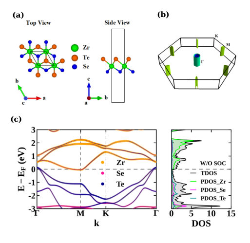
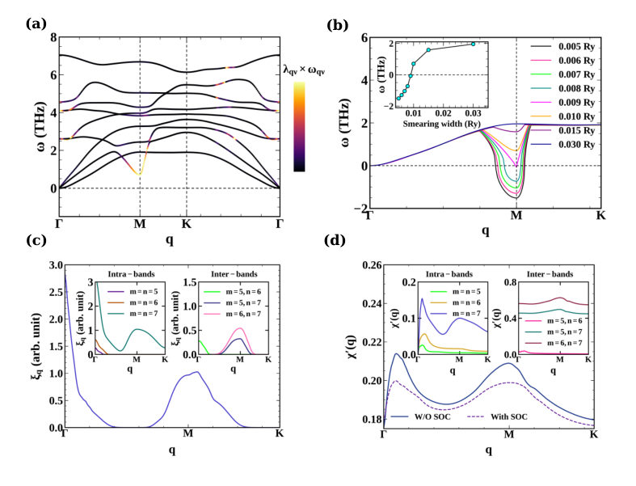
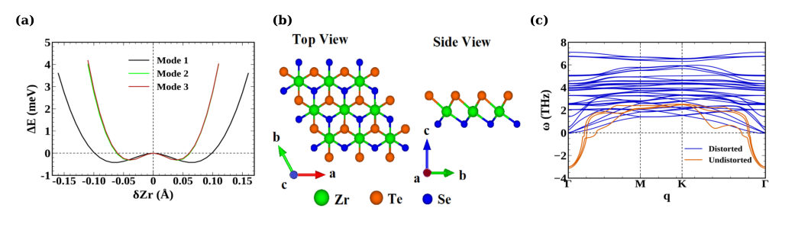
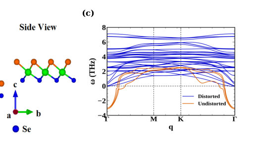
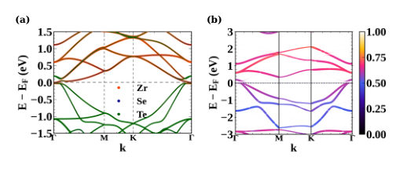
Summary. This theoretical study investigates the competition between Charge Density Wave order and superconductivity in the $ ext{ZrSeTe}$ Janus monolayer using first-principles calculations. The authors demonstrate that structural changes, strain, or electron correlation can tune these instabilities, predicting a robust two-gap superconducting state mediated by lattice vibrations when CDW is suppressed.
Why it may be interesting. This work is highly relevant as it tackles competing orders (CDW vs. SC) in a tunable solid-state system, which is central to understanding unconventional superconductivity mechanisms often studied in AMO contexts (e.g., pairing mediated by collective excitations).
Main problem. The study investigates the complex interplay between Charge Density Wave (CDW) order and superconductivity in low-dimensional Janus transition-metal dichalcogenides ($ ext{ZrSeTe}$). The research aims to understand how structural modifications, electronic correlations, and external strain tune these competing ground states.
Main result. The $ ext{ZrSeTe}$ monolayer exhibits phonon-mediated two-gap superconductivity in its undistorted phase. Both CDW instability and superconductivity are highly sensitive to the substitution of Te with Se, local correlation ($U_{ ext{eff}}$), and applied biaxial strain.
Method. The work employs first-principles calculations (DFT) combined with advanced many-body techniques like Migdal-Eliashberg theory for superconductivity. Analysis involves calculating phonon spectra, electronic susceptibilities ($\chi'_q$), and energy profiles under various perturbations.
Model / system. The physical system is the $1T$ $ ext{ZrSeTe}$ Janus monolayer, a low-dimensional material platform. The theoretical framework incorporates electron-phonon coupling (EPC), local Hubbard correlation ($U_{ ext{eff}}$), and mechanical strain as tuning parameters.
Key observables. Phonon anomalies/softening at the M point, electronic band gap opening, CDW energy gain, superconducting critical temperature ($T_c$), and two-gap superconducting features ($\Delta$).
Important parameters / regimes. Biaxial strain (compressive/tensile), Hubbard $U_{ ext{eff}}$ strength, Spin-Orbit Coupling (SOC) inclusion.
Assumptions / limitations. The calculations rely on DFT approximations (PBE functional) and use established formalisms like the Allen-Dynes modified McMillan formula for superconductivity.
Figures summary. Figures illustrate band structures and Fermi surfaces under strain/SOC, phonon dispersions showing anomalies, and energy profiles confirming structural instabilities or correlation effects.
Paper structure. The paper systematically analyzes the electronic structure (band gaps, FS) first, then investigates CDW instability via phonon softening and susceptibility peaks. Subsequently, it models superconductivity using EPC calculations, finally mapping out how strain and correlation tune both phenomena.
Low-dimensional transition-metal dichalcogenides (TMDCs) provide an ideal platform for studying the emergence of charge density wave (CDW) and superconductivity. The discovery of emergent CDW order in 1T $\mathrm{ZrTe_2}$ monolayer raises an important question: does this instability persist when one $\mathrm{Te}$ chalcogen layer is substituted by $\mathrm{Se}$? In the present work, we investigate the CDW (2$\times$2$\times$1) and superconducting instability in 1T $\mathrm{ZrSeTe}$ Janus monolayer using first-principles calculations. The phonon spectrum exhibits a pronounced anomaly at the $\mathrm{M}$ point of the irreducible Brillouin zone, arising from enhanced electron-phonon interaction together with electronic instabilities originating from both interband and intraband scattering. The resulting lattice distortion reconstructs the electronic structure, opening a small indirect band gap, driving the system from a semi-metallic to a semiconducting state. The energy gain associated with the distortion is significantly smaller than that of $\mathrm{ZrTe_2}$ monolayer, indicating that the replacement of one $\mathrm{Te}$ chalcogen layer with $\mathrm{Se}$ weakens the CDW instability. We have further investigated the effects of electronic correlation and biaxial strain, both acts as effective tuning parameters for the instabilities concerened. In the high temperature undistorted phase, $\mathrm{ZrSeTe}$ exhibits phonon mediated two-gap superconductivity. It originates primarily from the robust coupling between the soft phonon mode at $\mathrm{M}$ point and the electronic bands predominantly derived from $\mathrm{Zr}$ $\mathit{d}$ and $\mathrm{Te}$ $\mathit{p}$ orbitals crossing the Fermi level. Spin-orbit coupling (SOC) further modifies the electronic states and reduces the superconducting transition temperature.
Authors: Sung Jin An, Minseo Cho, Minjun Park, Dohun Kim, HyeonJeong An, Seung-Bo Shim, Hakseong Kim, Sunghun Lee, Myoung-Jae Lee, Kenji Watanabe, Takashi Taniguchi, Jungpil Seo, Myunglae Jo, Youngwook Kim, Minkyung Jung
Type: experiment · Category: other · PDF: https://arxiv.org/pdf/2606.14431v1
Analysis basis: full PDF text, analyzed in chunks
Topic relevance: Kondo & dissipative impurity 1/5 · analog quantum simulation 1/5 · methods for driven-dissipative 1/5 · non-equilibrium dynamics 1/5
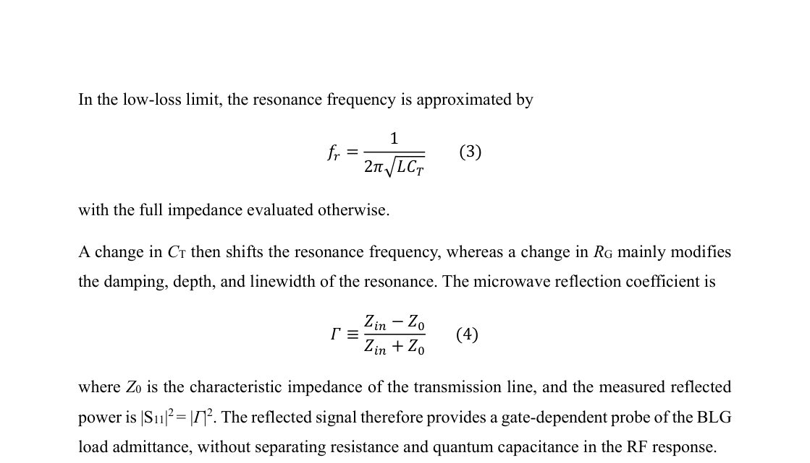
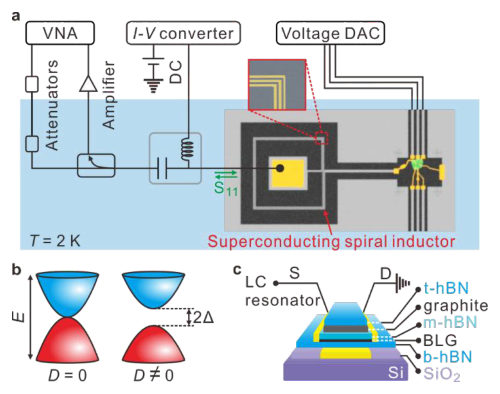
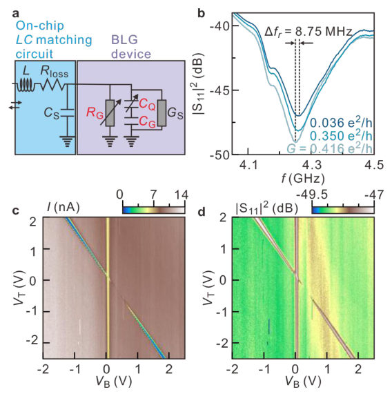
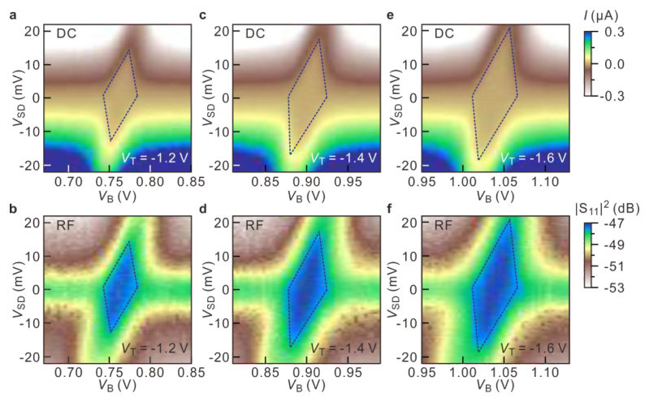
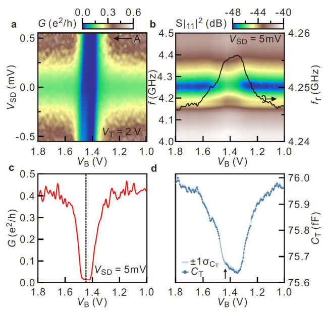
Summary. This work utilizes superconducting GHz RF reflectometry on a dual-gated bilayer graphene device to measure its electronic capacitance. By analyzing shifts in the LC resonator's resonance frequency, the researchers successfully map out the gate-dependent capacitance, confirming that this response tracks changes in the material's compressibility near an induced band gap. This technique offers a powerful, complementary diagnostic tool beyond standard DC transport measurements.
Why it may be interesting. While focused on condensed matter electronics, the use of microwave spectroscopy (RF reflectometry) to extract quantum capacitance provides a highly sensitive, non-invasive probe into the density of states and compressibility of 2D materials, which is relevant for understanding quantum confinement effects in nanoscale devices.
Main problem. The study aims to characterize the gate-dependent capacitance response of bilayer graphene (BLG) by measuring its admittance using on-chip superconducting GHz RF reflectometry.
Main result. The measured capacitance exhibits a minimum near the conductance-suppressed region, which is consistent with reduced electronic compressibility in the field-induced band gap of BLG. The technique successfully complements DC transport measurements within a single device.
Method. RF reflectometry using an on-chip superconducting Nb LC resonator coupled to the graphene channel allows for the extraction of the effective capacitance by tracking the resonance frequency shift ($\Delta f_r$).
Model / system. The physical system is a dual-gated, hBN-encapsulated bilayer graphene heterostructure. The analysis employs an equivalent-circuit model treating the resonator as connected to the BLG load, where total capacitance combines geometric and quantum contributions.
Key observables. RF reflection coefficient (|S11|^2), resonance frequency shift ($\Delta f_r$), DC conductance (G), and extracted effective capacitance ($C_T$).
Important parameters / regimes. Measurement temperature of 2 K; operating frequency near 4.25 GHz; gap size potentially exceeding 100 meV.
Assumptions / limitations. The analysis relies on an equivalent-circuit framework, and the simplified model may break down in the low-conductance, gapped regime due to disorder or inhomogeneity.
Figures summary. Figures illustrate the device architecture (BLG heterostructure on Nb resonator), schematic band structures showing gap opening, and maps correlating DC current measurements with simultaneously measured RF reflected power (|S11|^2).
Paper structure. The paper details the setup using superconducting LC resonators for high-frequency characterization. It presents data comparing DC transport maps to RF reflection maps, demonstrating that both probe the same underlying gate-dependent electronic structure, particularly near the charge neutrality point.
In dual-gated bilayer graphene, a perpendicular displacement field opens a band gap that modifies both the channel conductance and the electronic compressibility, motivating measurements that resolve resistive and capacitive responses on the same device. We integrate an hBN-encapsulated bilayer graphene heterostructure with an on-chip superconducting Nb lumped-element LC resonator and carry out RF reflectometry near 4.25 GHz. DC transport and finite-bias spectroscopy on the same device provide a transport reference. Top and bottom gates independently set the carrier density and displacement field. The DC and RF gate maps share the same gate-dependent features, with finite-bias measurements revealing a region of suppressed conductance whose bias extent grows with the displacement field, consistent with a field-induced gap. The gate-dependent resonance-frequency shift is converted to the effective capacitance seen by the resonator using an equivalent-circuit model. The capacitance shows a minimum near the conductance-suppressed region, consistent with reduced electronic compressibility in the gapped bilayer graphene, and exhibits an electron-hole asymmetry. The on-chip configuration probes the gate-dependent admittance of a dual-gated van der Waals heterostructure, providing capacitance-sensitive information that complements DC transport within a single device.
Authors: Lyudmila Ivanova
Type: theory · Category: other · PDF: https://arxiv.org/pdf/2606.14563v1
Analysis basis: full PDF text, analyzed in chunks
Topic relevance: Frenkel-Kontorova 1/5
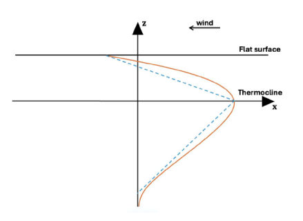
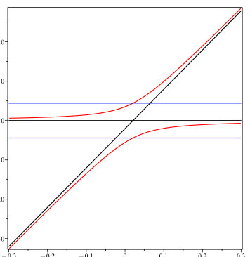
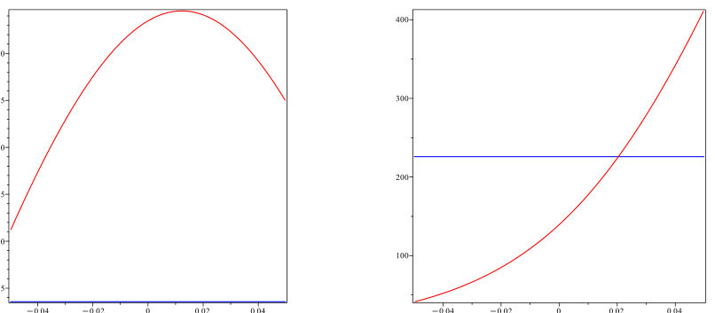
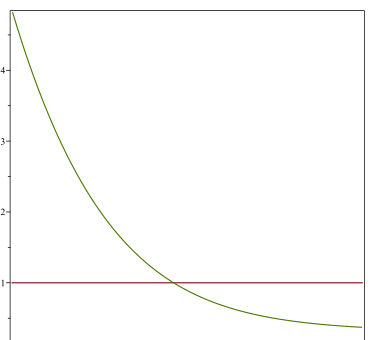
Summary. This paper develops a nonlinear model, based on the Benjamin-Ono equation, to describe internal waves at oceanic pycnoclines. It rigorously incorporates background shear currents into this wave propagation framework. The key finding is that these currents significantly modify the resulting soliton behavior and wave speeds compared to simpler, irrotational models.
Why it may be interesting. While not quantum physics, the mathematical framework of nonlinear wave propagation (integrable systems) is highly relevant in theoretical physics for modeling complex dynamics, analogous to how many-body quantum systems can be mapped onto effective classical field theories or soliton equations.
Main problem. The study derives nonlinear integrable models for internal waves propagating at a pycnocline interface between two fluid layers, specifically incorporating the effects of underlying background currents.
Main result. The Benjamin-Ono (BO) equation governs the dynamics, and the analysis shows that background shear current significantly affects soliton characteristics, leading to speed splitting and amplitude modification compared to irrotational cases.
Method. The authors use asymptotic long-wave scaling parameters ($\epsilon, \delta$) applied to the Euler equations for a two-layer fluid system, deriving the governing equation via Hamiltonian methods.
Model / system. The physical system is an incompressible, inviscid, two-layer fluid model representing oceanography. The dynamics are modeled by the Benjamin-Ono (BO) equation: eta_t + ceta_x + delta A etaeta_x - delta B|D|eta_x = 0.
Key observables. Soliton characteristics, wave speed $c$, amplitude ratio $R = \eta^*_s / \eta^*_0$, and conserved quantities like Energy ($E$).
Important parameters / regimes. Shear current parameters ($\kappa, \gamma_1$), nonlinearity parameter $\epsilon$, and long-wave scaling parameter $\delta$.
Assumptions / limitations. The derivation relies on the flat surface approximation and assumes that the weak nonlinearity and long-wave regimes are of comparable order ($O(\epsilon) = O(\delta)$).
Figures summary. Figure 2 compares wave speeds $c_\pm$ versus vorticity ($\gamma_1$), showing splitting. Figure 3 shows coefficient dependence on $\gamma_1$. Figure 4 plots the amplitude ratio $R$ vs. $\gamma_1$, indicating how shear affects soliton amplitudes.
Paper structure. The paper progresses from setting up the two-layer fluid model using Euler equations to deriving the BO equation under specific asymptotic limits, and finally analyzing the resulting integrable equation by comparing solutions with and without background shear currents.
Internal water waves arise when there is a change in density stratification in a fluid, which may occur in an oceanographical context due to variations in temperature, salinity, or other fluctuations in the equations of state. We present a derivation of nonlinear integrable models for the propagation of interfacial internal waves arising between two fluid layers of different densities (at the so called pycnocline). We examine the integrable Benjamin-Ono (BO) equation as an internal wave model, incorporating underlying currents by permitting a sheared current in both fluid layers. The BO equation arises for a specific small-amplitude asymptotic regime. We show that the BO soliton characteristics are strongly affected by the shear current parameters.
Authors: Yawar Mohammadi
Type: theory · Category: other · PDF: https://arxiv.org/pdf/2606.14424v1
Analysis basis: full PDF text, analyzed in chunks
Topic relevance: Keldysh / 2PI / non-Gaussian methods 1/5
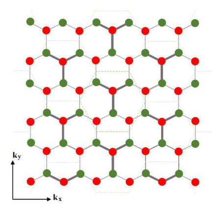
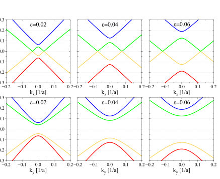
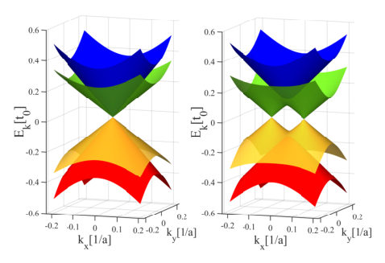
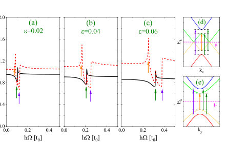
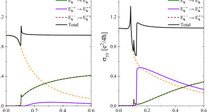
Summary. This paper theoretically investigates the optical response of Kekulé-Y graphene when subjected to uniaxial strain and doping. By calculating the optical conductivity using advanced Hamiltonian methods, the authors predict a distinct, anisotropic optical resonance linked to strain-induced Van Hove singularities. This resonance serves as a robust spectroscopic fingerprint for identifying the specific electronic ordering in the material.
Why it may be interesting. This work provides a concrete theoretical framework for using optical spectroscopy as a sensitive probe to detect subtle electronic phase transitions (like Kekulé ordering) in 2D materials by engineering strain-induced band structure features.
Main problem. The study investigates how uniaxial strain and carrier doping modify the optical resonance and electronic structure of Kekulé-Y graphene.
Main result. A pronounced, strongly anisotropic optical resonance emerges from strain-induced Van Hove singularities, providing a robust optical signature for the Kekulé-Y ordering that is stable against disorder and temperature.
Method. The analysis employs the Kubo formalism to calculate the optical conductivity ($\sigma$) using low-energy effective Hamiltonians derived near strain-induced Dirac points.
Model / system. The system is Kekulé-Y graphene, modeled by a low-energy effective Hamiltonian that incorporates nearest-neighbor hopping and coupling terms related to the Kekulé bond-order pattern. Strain modifies this structure, inducing anisotropic dispersion and Van Hove singularities.
Key observables. Optical conductivity ($\sigma_{xx}, \sigma_{yy}$), Drude weight ($D_{\alpha\alpha}$), and the position/intensity of optical resonance peaks.
Important parameters / regimes. Uniaxial strain magnitude ($\epsilon$), chemical potential ($\mu$), photon energy ($\hbar\Omega$), disorder strength ($\Gamma$), and temperature ($T$).
Assumptions / limitations. The analysis relies on a low-energy Dirac approximation, the long-wavelength limit ($q=0$) for optical measurements, and phenomenological modeling of disorder via Lorentzian broadening.
Figures summary. Figures illustrate band structure modifications under strain (showing VHS), and plot $\sigma_{xx}$ and $\sigma_{yy}$ vs. $\hbar\Omega$ as a function of strain, doping ($\mu$), temperature ($T$), and disorder ($\Gamma$).
Paper structure. The paper progresses from establishing the low-energy Hamiltonian under strain to calculating the optical conductivity via the Kubo formula. It then systematically analyzes how this resonance feature persists when varying key parameters like doping, temperature, and disorder.
We investigate the optical response of Kekulé-Y graphene under uniaxial strain and carrier doping. Using a low-energy effective Hamiltonian, we show that strain reshapes the low-energy electronic structure of the Kekulé-Y phase and induces Van Hove singularities at energies well below those of pristine graphene. Within the Kubo formalism, we calculate the optical conductivity and identify multiple anisotropic interband features, with a pronounced resonance arising from strain-induced Van Hove singularities. The pronounced resonance is strongly anisotropic and robust against moderate thermal broadening and disorder, providing a clear optical signature of Kekulé-Y ordering. We further derive analytical expressions for the low-energy optical conductivity and the Drude weight, providing a detailed characterization of the strain- and doping-dependent optical response. Our results establish strain engineering as an effective route for controlling valley-dependent optical properties in Kekulé-Y graphene, originating from the Kekulé-induced coupling of the Dirac valleys, and suggest feasible optical probes for the experimental identification of the Kekulé-Y phase.